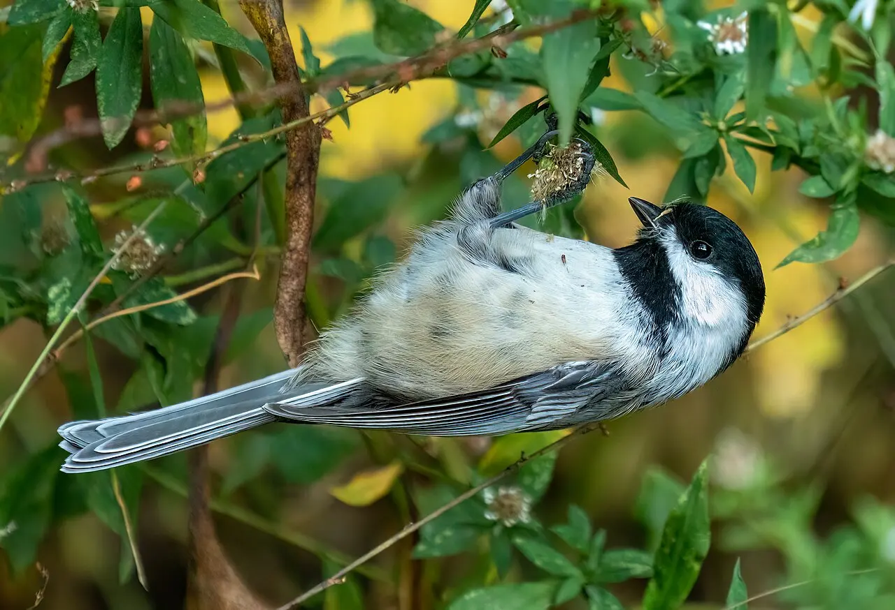
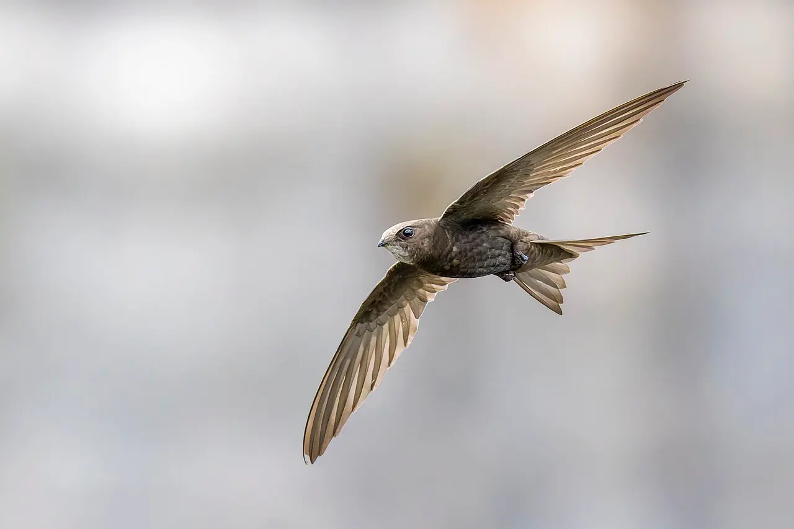
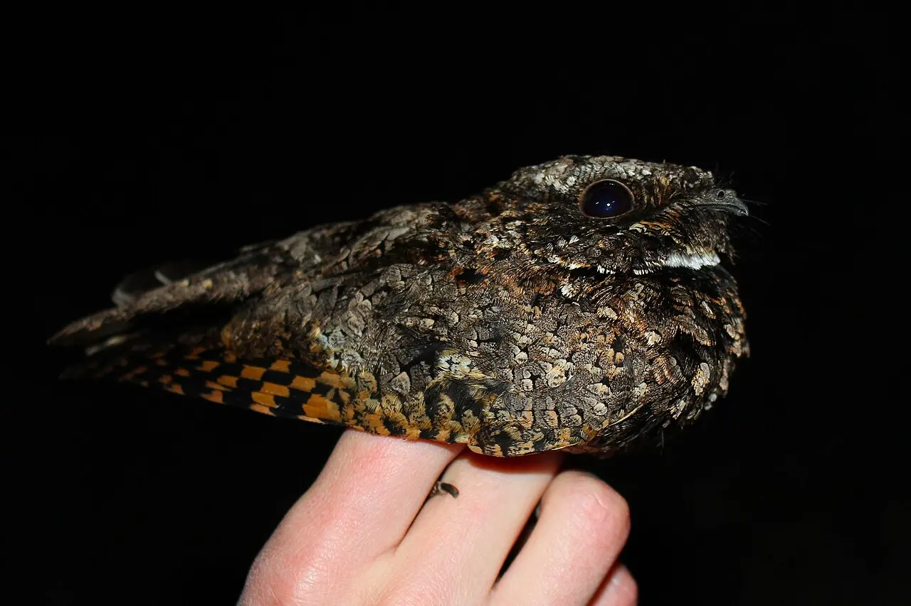

Módulo 2 Aula 7
Coração e energia
Uma ave voa, mantém o corpo quente e ainda cresce rápido. Tudo isso custa energia, e o coração é a bomba que a entrega.
- Como o coração de quatro câmaras separa dois tipos de sangue
- Por que o coração de um beija-flor bate tão depressa
- O que é torpor e por que ele existe

Ave da aula
Beija-flor-tesoura Eupetomena macroura
Quatro câmaras
O coração de uma ave tem quatro câmaras, como o dos mamíferos[1]. As duas da direita bombeiam o sangue pobre em oxigênio até os pulmões. As duas da esquerda recebem o sangue rico em oxigênio e o mandam ao corpo. Como as duas metades não se misturam, o corpo recebe sempre sangue carregado de oxigênio, o que é essencial para quem gasta tanta energia.
As bolinhas mostram o sangue circulando, tudo ao mesmo tempo. Azul é sangue pobre em oxigênio, laranja é rico. Escolha uma etapa para destacá-la.
Esquema didático, sem escala.
O ritmo do coração
O coração dos beija-flores é famoso por sua velocidade. Compare três situações. As animações estão em câmera lenta, mas mantêm a proporção entre os ritmos.
Beija-flor norte-americano Archilochus colubris (em inglês, ruby-throated hummingbird), em repouso.
Mesmo parado, o coração bate várias vezes por segundo[3].
A mesma espécie, voando.
No voo, o ritmo chega a mais de cinco vezes o de repouso[3].
Beija-flor norte-americano Lampornis clemenciae (em inglês, blue-throated hummingbird), em torpor. Fora do torpor, o ritmo chega a 1.260.
No torpor, o ritmo cai a uma fração do normal[4].
Dados de espécies norte-americanas, medidos em estudos. O beija-flor-tesoura, ave da aula, é uma espécie sul-americana da mesma família.
O custo de ser quente
Como vimos na aula 1, a ave é [2]. Isso tem um preço: quem produz calor por dentro precisa de combustível o dia todo. O beija-flor, que dispensa até a camada de penugem para poupar peso, compensa comendo sem parar: consome em néctar duas a três vezes o próprio peso por dia[5]. Por isso o néctar, que é açúcar concentrado, funciona como um combustível de alto rendimento[5].
Torpor: dormir em economia
De noite, o beija-flor não tem como se alimentar. Então ele faz algo radical: entra em [3]. A temperatura do corpo pode cair de cerca de 42 °C para perto de 9 °C, e o metabolismo pode diminuir até 95% numa noite muito fria[4, 5]. Se durasse muito tempo, seria hibernação. Os beija-flores entram em torpor em qualquer noite do ano em que o frio e a falta de comida pedirem[3].
E as outras aves?
O beija-flor é o exemplo mais conhecido, mas não é o único. Ao menos 29 espécies de aves reduzem o metabolismo e a temperatura do corpo por algum tempo[6]. Quase todas comem insetos, frutos ou néctar, e o motivo mais comum é a falta de comida ou o frio[6]. Entre os grupos com torpor estão os beija-flores, os pássaros-ratos (mousebirds) e a família dos bacuraus e curiangos[6]. As pombas também aparecem entre as aves com torpor breve[7]. O torpor não é um interruptor: ele tem graus, do mais suave ao mais profundo.

Versão suave
O chapim-de-cabeça-preta (Poecile atricapillus), ave norte-americana pequena, entra em uma versão leve de hipotermia noturna: a temperatura cai alguns graus durante a noite e volta ao normal antes de amanhecer. Chapins que fazem isso sobrevivem melhor a ondas de frio[10].
Esta é a forma mais comum e mais leve, e não tem o “desligamento” quase total do beija-flor em noites frias.

Noites frias, sem hibernar
Pesquisadores mediram andorinhões-comuns (Apus apus) livres, descansando em ninhos, e viram torpor noturno, com o gasto de energia cerca de 50% menor[9]. Em outras palavras: a economia é grande, mas por uma noite.

O caso extremo: o poorwill
O poorwill (Phalaenoptilus nuttallii), parente dos bacuraus, do oeste da América do Norte, pode ficar horas ou até semanas em torpor no inverno[7]. Em um estudo, aves à sombra esquentaram ativamente depois de ao menos 3 dias seguidos em torpor. Segundo os autores, é a única ave que aparentemente hiberna[8]. Os autores também dizem que seu padrão lembra o de mamíferos que hibernam[8].
Os estudos citados são de espécies da América do Norte, da Europa e de laboratório. Não encontrei medições com aves brasileiras: aqui os bacuraus e curiangos são parentes das aves estudadas, mas isso não garante que façam o mesmo.
Valores de referência (beija-flores). A National Geographic cita 107 °F caindo para 48 °F, ou seja, de cerca de 42 °C para cerca de 9 °C[4].
Palavras novas
Teste rápido
Sem nota. Se errar, tente de novo.
Por que o sangue da ave não se mistura entre os dois lados do coração?
O que acontece com o coração do beija-flor no voo, comparado ao repouso?
Para que serve o torpor?
Só o beija-flor entra em torpor?
Referências e leitura complementar
Onde conferir o que foi dito nesta aula. Os números entre colchetes no texto levam a estas fontes. Os links abrem em outra aba.
- What are the unique characteristics of birds?Encyclopaedia Britannica · inglêsResumo dos traços que definem as aves: penas, sangue quente, ovo de casca dura, coração de quatro câmaras.
- Warm-bloodednessEncyclopaedia Britannica · inglêsO que é endotermia e como os animais mantêm a temperatura do corpo.
- HummingbirdsSmithsonian's National Zoo and Conservation Biology Institute · inglêsMetabolismo, batimentos do coração e torpor dos beija-flores.
- How the World's Smallest Birds Survive the WinterNational Geographic · inglêsO torpor noturno dos beija-flores.
- Where Do Hummingbirds Get All That Energy?Audubon · inglês · leitura complementarComo os beija-flores sustentam um gasto de energia tão alto.
- Torpor and HibernationOrnithology Education (ornithology.org) · inglêsAo menos 29 espécies de aves reduzem o metabolismo e a temperatura; quem faz e por quê.
- Some Birds Enter A Hibernation-Like State Called Torpor to Survive Winter's ChillAudubon · BirdNote · inglêsBeija-flores, pombas e o bacurau-de-nuttall (poorwill) em torpor; o poorwill fica semanas.
- The avian “hibernation” enigma: thermoregulatory patterns and roost choice of the common poorwillOecologia (Springer) · inglês · leitura complementarEstudo científico: o poorwill é a única ave que aparentemente hiberna.
- Cool birds: first evidence of energy-saving nocturnal torpor in free-living common swifts Apus apus resting in their nestsBiology Letters · PubMed Central · inglês · leitura complementarAndorinhões em ninhos, medidos em liberdade: torpor noturno com metabolismo cerca de 50% menor.
- Winter Survival Adaptations for North American BirdsThe Birding Insights · inglêsTorpor em beija-flores, andorinhões, poorwill e a versão suave dos chapins.
Os endereços foram abertos e conferidos em 29/09/2026. Alguns sites de revistas científicas e de órgãos oficiais exigem verificação humana e não puderam ser testados por robô. Sites externos podem mudar ou sair do ar.
Para levar
Em três frases
- O coração de quatro câmaras separa o sangue pobre em oxigênio do sangue rico, como nos mamíferos.
- O coração do beija-flor bate muito mais depressa no voo do que em repouso.
- Em noites frias, o beija-flor entra em torpor e reduz o gasto de energia.
- O torpor tem graus: chapins fazem uma versão leve, andorinhões e beija-flores reduzem bastante o gasto por uma noite, e o poorwill fica dias em torpor.